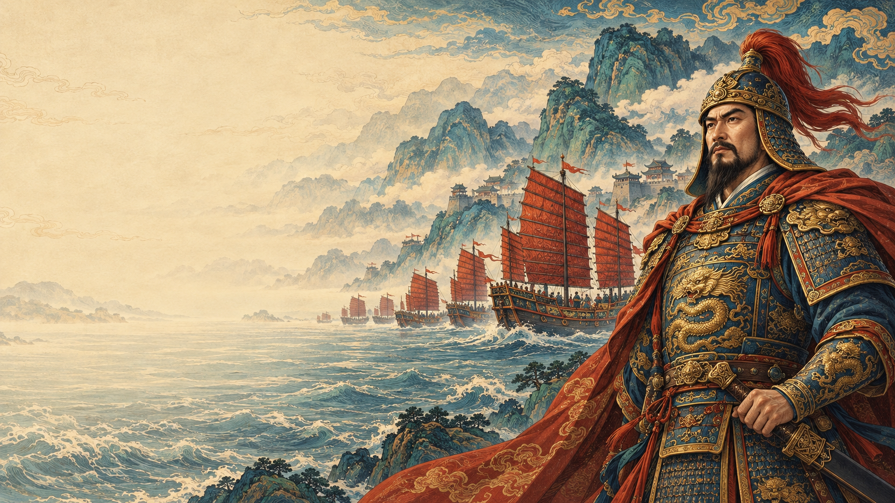

主线规划一面旗，
一面旗，
两代人的海疆
先随郑芝龙在海上谋生，再与郑成功面对新的岸与旧的承诺。贸易、护送与征讨，随着故事逐步展开。
新双主角主线尚未接入游戏。史实骨架与原创情节分别记录。

项目生成原画 · 非游戏实机 故事从此起郑芝龙最初只想让一船人有饭吃、有港可靠。你将从短途操船起步，逐步接触劫掠、买卖和护镖：挣来的钱换成新帆，救下的人日后可能替你掌舵。航路渐渐伸向琉球、满剌噶和其他港市，王府、商人、船工各有诉求；一份引荐、一趟使船、一张旧货单，会改变下一段生意和归航。地区会面与私人故事为原创情节，不冒称两位主角真实亲访每港。
接受明朝招安后，郑芝龙带着旧部护航、保卫港口，奉命征讨沿海敌手。官身给他更大的力量，也让旧交与职责发生冲突。到了1646年，父子分途，操控视角转向郑成功：他接过部分人船、航路和未完承诺，也必须重新赢得伙伴信任。父亲积攒的一切，都将在新的选择中显出分量。
郑成功要先聚拢离散部众，以贸易筹粮、护送补给、守住港口，在胜败中重建自己的船队。最终，故事驶向1661—1662年的台湾战役：筹船渡海、勘路登陆，继而围城封锁、保护运输与维持长期供给，逐步击败荷兰东印度公司的守军、收复台湾。前半生学过的操船、经营与指挥，在这里汇成一场连续战役；能把多少同伴带到终点，取决于一路的判断。
主线内容与进度框架制作中，尚未形成全部真实任务可通关版本。剧情按玩家理解与逐渐难度继续调整，历史锚点和原创情节分别说明。
炮火之外，还有要护的船、要养的人，与下一段航路。
这里同时收录现有玩法与未来设计。
每一项的进度，都写在它的名字旁。
船体、兵装与一船人的分工，决定怎样打这一仗。
先随郑芝龙在海上谋生，再与郑成功面对新的岸与旧的承诺。贸易、护送与征讨，随着故事逐步展开。
新双主角主线尚未接入游戏。史实骨架与原创情节分别记录。
从原画到模型，再到真正运行的游戏。